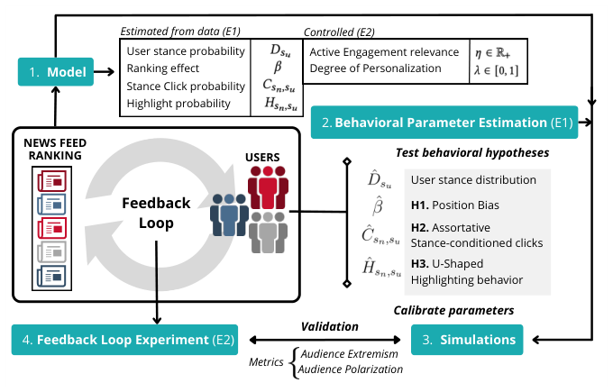

Rewarding Engagement and Personalization in Popularity-Based Rankings Amplifies Extremism and Polarization (奖励参与度与个性化如何放大极端化与极化)
- 会议/期刊: KDD 2026 (V.2, pp. 875–886)
- 作者与机构: Jacopo D'Ignazi, Emma Fraxanet, Andreas Kaltenbrunner, Gaël Le Mens, Fabrizio Germano, Vicenç Gómez（Universitat Pompeu Fabra / Barcelona Supercomputing Center / BSE）
- 推荐链路定位: 重排（Feed 级流行度排序与热度更新）
- 研究方向: 去偏公平、可信隐私与工业架构 / 社交与群组推荐
- 论文原文: arXiv:2510.24354v3
- 开源代码: Zenodo 复现包
TL;DR (1分钟核心速览)
平台把点击/点赞/分享（"参与度"）纳入排序目标并叠加个性化，究竟会不会把用户推向更极端的内容？本文不靠观测数据，而是构造一个仅含 5 个可解释参数的流行度排序动力模型，先用 432 名被试（E1）极大似然估计出位置偏差、同立场点击与 U 型参与度三条行为规律，再以 1534 名被试、24 条动态排序轨迹（E2）做因果检验：从中性排序切换到"强个性化 + 强参与度奖励"后，左右翼用户对极端同立场内容的点击提升约 20%，中间新闻点击下降 15–20%，中心用户无显著变化；实验与仿真相关 \(r=0.88\)（指标）、\(r=0.97\)（点击分布）。
Background & Motivation (背景与核心矛盾)
- 主流范式: 工业排序普遍以点击、分享、评论等参与度信号定义热门度，再按用户画像做个性化重排（如 Facebook 2018 "Meaningful Social Interactions" 更新同时提高了参与度权重与个性化程度）。
- 前人局限: (i) 田野实验/观测研究结论高度混杂——改变曝光对态度影响有限，甚至出现"接触对立观点反而加剧敌意"的反弹效应，难以识别因果；(ii) 已有 agent-based 与理论模型缺少可估计、可实验检验的参数化，无法把行为规律与算法旋钮对应起来。
- 核心洞察 (Key Insight): 四条有实证支撑的弱假设——位置偏差、同立场偏好、极端用户更活跃、排序按热度分配位置——在"参与度奖励 + 个性化"同时开启时会自组织成正反馈闭环：极端用户的点击与高亮被重复加权 → 内容位置上移 → 位置偏差让更多人点击它。
- 本文切入点: 把该闭环压缩成一个可 MLE 标定的小参数模型，再用人类被试在动态更新的排序上做对照实验，验证模型预测。
Method (核心方法设计)
1. 整体框架 (Overall Architecture)
框架分四段闭环：模型 → 行为参数估计（E1）→ 数据驱动仿真 → 反馈回路实验（E2）。新闻与用户在五点立场谱 \(S=\{-2,-1,0,1,2\}\)上取值，用户按顺序到达，看到\(N=10\)条排序列表后点击一条并可选"高亮"（点赞/分享）；点击同时更新该条在各用户群体\(g\in\{L,C,R\}\)中的热度\(p^{g}_{n}(t)\)，下一用户的列表即按\(p^{g}_{n}(t)\)降序生成。E1 用随机且不更新的静态列表估计\((D_{s_u},\beta,C,H)\)；仿真把估计值注入模型、以\(\lambda,\eta\) 网格扫描；E2 用真实被试在线交互、动态更新热度，并把观测指标与仿真预测对齐。
flowchart TD
A["用户立场 s_u ~ D_su"] --> B["位置偏差 R(r_n)=β^(N-r_n) × 立场点击 C"]
B --> C["点击 n，可选高亮 H"]
C --> D["热度更新 Δp^g_n(t)：λ 个性化、η 参与度奖励"]
D --> E["按 p^g_n(t) 重排列表 → 下一位用户"]
E --> B
C --> F["指标 Ext(t) / Pol(t)"]
2. 关键设计拆解 (Key Designs)
-
乘性位置偏差 + 立场条件点击的归一化算子：痛点是把"位置效应"和"内容偏好"混在一个 softmax 里无法分离。本文将点击概率写成可分解形式 \(P(n\mid r,s_u)=\dfrac{R(r_n)C_{s_n,s_u}}{\sum_{n'}R(r_{n'})C_{s_{n'},s_u}}\)，其中\(R(r_n)=\beta^{N-r_n}\)、\(\beta\ge1\)。 指数形式使 \(\beta\)具有"下移一位点击率缩小\(\beta\)倍"的直接乘性解释（\(R(r_n)/R(r_n+1)=\beta\)），避免了对数线性模型难以跨列表比较的问题；换成幂律衰减结论不变。
-
双旋钮热度更新算子（个性化 \(\lambda\)+ 参与度奖励\(\eta\)）：痛点是平台的两个设计选择总被同时部署，无法在理论层面拆开。本文用一条更新式同时参数化二者： \(\Delta p^{g}_{n}(t)=\big(\mathbb{I}[s_u\in g]+(1-\lambda)\mathbb{I}[s_u\notin g]\big)\,(1+\eta\,\mathbb{I}[\text{highlight}])\)。 \(\lambda=0\)表示全站共享排序，\(\lambda=1\)表示群体排序完全忽略外群体活动；\(\eta=0\)表示只看点击，\(\eta>0\) 表示高亮获得额外热度。该式的物理直觉是：个性化削弱了"跨立场点击对新热度的稀释"，参与度奖励则把极端用户的高活跃度直接折算成曝光。
-
参数估计目标与推理开销：无梯度训练，全部参数由 E1 的极大似然估计得到（\(\hat\beta=1.09\pm0.01\)，\(\hat C\)、\(\hat H\)为\(5\times5\)条件概率表），用户立场分布\(\hat D_{s_u}\)由经验频率给出。排序更新是\(O(N)\) 的加法；仿真侧每个配置 1000 次独立运行、每次 250 名合成用户，指标在约 200–300 次交互后收敛，因此 E2 每条轨迹配置 ~253 次交互。
Experimental Setup & Evaluation Protocol (实验设置与评估协议)
- 实验与数据规模:
| 阶段 | 参与者/实体 | 物品 | 交互量 | 初始化 | 场景说明 |
|---|---|---|---|---|---|
| E1 参数估计 | 432 名 Prolific 美国被试 | 4 主题 × 10 条新闻 | ~1728 次点击 + 高亮 | 随机静态排序 | Ground.news 硬新闻（性别政策/疫苗/移民/气候），5 点立场 |
| E2 反馈回路实验 | 1534 名被试，24 条轨迹 | 10 条/列表 | ~253 次交互/轨迹 | \(p^{g}_n(0)=0\) + 随机破平 | 2 配置 × 4 主题 × 3 轨迹，动态更新 |
| 仿真 | 250 合成用户 × 1000 次/配置 | 同上 | 25 万级 | 随机排序 | \(\lambda\in[0,1]\)、\(\eta\in[0,100]\) 对数网格 |
- 划分与防穿越: 无监督/测试划分概念，靠随机化防混淆——被试随机分配主题顺序、随机分配算法配置与轨迹，E1 的列表对被试行为不更新（切断反馈），E2 才启用更新；指标只取最后 \(w=200\) 次点击窗口并丢弃前 ~50 次交互以去除初始排序瞬态。
- 评测协议: 指标为 \(\text{Ext}(t)=\langle|\hat{s}_n(\tau)|\rangle_{\tau\in W}\)（点击内容立场的平均绝对偏移）与\(\text{Pol}(t)=\langle\hat{s}_n\rangle_{W_R}-\langle\hat{s}_n\rangle_{W_L}\)（左右翼受众平均点击立场差）。统计检验使用单侧 Mann–Whitney U（对单次点击），并对连续点击做 10–50 块聚合做稳健性复核；点击分布用\(\chi^2\) 列联检验；参数误差棒来自 1000 次用户级 bootstrap。
- 对比设置: 基线为中性排序 \((\lambda=0,\eta=0)\)，处理组为\((\lambda=1,\eta=100)\)；两者的独立作用由仿真网格与四个角点配置（\(2\times2\)）分离。
Key Experimental Results (实验关键数据)
1. 主实验对比 (Main Results)
E2 因果结果（↑/↓ 表示相对中性排序的变化，显著性为单侧 Mann–Whitney U）：
| 主题 | Audience Extremism | 显著性 | Audience Polarization | 显著性 |
|---|---|---|---|---|
| Gender 政策 | ↑ | ** | ↑（不显著） | n.s. |
| Vaccines 疫苗 | ↑ 增幅最大 | ** | ↑ 增幅最大 | *** |
| Immigration 移民 | ↑ | * | ↑ | *** |
| Climate 气候 | ↑（不显著） | n.s. | ↑ | *** |
热度排序的机理证据（Table 1，数值越小越靠前）：
| 配置 / 分组 | EL | ML | C | MR | ER |
|---|---|---|---|---|---|
| \(\lambda=0,\eta=0\)（全站共享） | 6.0 | 4.7 | 2.4 | 6.7 | 7.7 |
| \(\lambda=1,\eta=100\) Left | 4.1 | 3.3 | 3.9 | 7.6 | 8.7 |
| \(\lambda=1,\eta=100\) Center | 5.9 | 6.1 | 3.1 | 5.7 | 6.6 |
| \(\lambda=1,\eta=100\) Right | 7.7 | 7.0 | 5.5 | 4.0 | 3.2 |
2. 消融实验 (Ablation Study)
仿真四角点配置（每主题 1000 次独立仿真，趋势在 4 个主题上一致）：
| 配置 | Ext | Pol | 归因 |
|---|---|---|---|
| \(\lambda=0,\eta=0\) | 最低 | 最低 | 中性基线，中心新闻占据榜首 |
| \(\lambda=0,\eta=100\)（仅参与度奖励） | ↑ | ↑ | 极端用户的高亮被折算成曝光 |
| \(\lambda=1,\eta=0\)（仅个性化） | ↑ | ↑↑ | 跨立场点击不再稀释同立场热度 |
| \(\lambda=1,\eta=100\)（联合） | 最高 | 最高 | 4 主题一致最高；Fig. 5 显示两指标对\(\lambda,\eta\) 单调递增 |
点击分布层面（E2 vs 仿真，\(r=0.97\)，\(p\sim10^{-18}\)）：
| 用户组 | 极端同立场点击 | 中心新闻点击 | \(\chi^2\) p 值 |
|---|---|---|---|
| Left | +20% | −15~20% | 0.005 |
| Center | 无显著变化 | 无显著变化 | 0.888 |
| Right | +20% | −15~20% | 0.031 |
3. 关键实验发现 (Key Findings)
- 三条行为假设被数据确认：\(\hat\beta=1.09\pm0.01\)（每下移一位点击率除以 1.09，位置偏差温和但稳健）；同立场点击 lift 在中心用户最高（\(\approx2\times\)随机基线）、极端用户\(\approx1.5\times\)；高亮概率呈 U 型，极左 ~50%、极右 ~47%，中间派仅 30–40%——正是这条 U 型曲线把参与度奖励变成了极端内容的"曝光放大器"。
- 联合配置的因果增益可量化：全部用户对同立场新闻的点击 +13%，左右翼对极端同立场内容点击 +20%，代价主要由中心新闻承担（−15~20%），而中心用户自身点击分布几乎不变（\(p=0.888\)）——说明是被动"被推送"而非主动寻求。
- 个性化比参与度奖励更"毒"：仿真中 \(\lambda\)轴（个性化）对极化指标的增速快于\(\eta\)轴；在 Immigration/Climate 上"仅个性化"的极端化水平甚至高于"仅奖励高亮"，且实验-仿真在 8 个主题-配置对上的相关达\(r=0.88\)（\(p=0.004\)），说明模型抓住了主效应而非过拟合。
Highlights & Limitations (亮点、对比与审稿批判)
- 与代表作对比: 相比 Facebook 2020 选举的田野 RCT（干预曝光、结论受上下文与短期性困扰），本文把"算法旋钮"显式参数化并做被试内动态排序实验，识别的是机制而非单点效应；相比既有 agent-based/理论模型（如其所依托的 Fraxanet 等），本文引入离散立场类别、显式建模中心用户、并用人类数据标定 \(C,H,\beta\)，使预测可被实验证伪。
- 可迁移亮点: (i) 位置偏差的乘性指数形式 \(R(r_n)=\beta^{N-r_n}\)可直接用于离线评估中的 position-based IPS 加权；(ii) 把\((\lambda,\eta)\) 当作排序策略上线前的"审计旋钮"，在仿真中扫描即可给出极端化/极化的风险热力图，成本极低。
- 审稿级局限批判: (i) 生态效度有限——Prolific 短期任务、单次高亮、10 条硬新闻列表，且完全不测量态度/信念变化，只能断言"消费模式"而非"观点极端化"；作者亦承认真实平台更丰富的参与信号（评论、转发链）可能让机制更强；(ii) 实验只测联合配置，\(\lambda\)与\(\eta\)的独立与交互效应仅由仿真给出，未做\(2\times2\) 的四条件人类实验，因此"个性化主导"这一结论尚缺实验层面的因果支撑；(iii) 主题间差异（疫苗最敏感、气候最钝）依赖 E1 的 432 人估计，样本量与主题级参数不确定性未被纳入显著性检验。
Rating (四维评分)
- 方法创新性 (Novelty): ⭐⭐⭐⭐ （把"位置偏差 + 同立场偏好 + U 型参与度"三条经验规律压缩成 5 参数可标定动力系统，并用双旋钮算子显式拆解平台设计，机制清晰、可证伪）
- 评估协议与实验扎实度 (Protocol & Experiments): ⭐⭐⭐⭐ （1534 人动态排序实验 + 1000 次仿真 + 块聚合稳健性 + bootstrap 误差棒，实验-仿真 \(r=0.88/0.97\) 的交叉验证相当有说服力；扣分在于未做四条件解耦实验）
- 写作与数学规范度 (Clarity & Rigor): ⭐⭐⭐⭐ （模型极简、每个参数都有行为学解释与估计来源，指标定义干净；但仿真数值多以热力图呈现，正文未给逐点表格，复现需依赖 Zenodo 包）
- 工业落地与复现价值 (Industrial & Practical Value): ⭐⭐⭐⭐ （代码与处理后数据全开源；\(O(N)\) 更新与轻量仿真使其可作为排序策略的"社会风险沙盒"，但结论外推到真实平台仍需日志级校准）